50 Ω results. Mixed meshes; one frequency is not a band result. Historical data are fitted. Unknown geometry is shown as ?.
| ID | Description | Alias | Stage | Status | Sampling | L mm | W mm | gap mm | overlap mm | edge mm | band samples | S31 dB | Dmin dB | Geometry |
|---|---|---|---|---|---|---|---|---|---|---|---|---|---|---|
| R001 | Straight-line control · port mesh 0.20 mm · old ground | straight_legacy | Numerical controls | completed | direct | 7.15 | 0.37 | 0.14 | 0.3 | 0.0 | 3 | — | — | 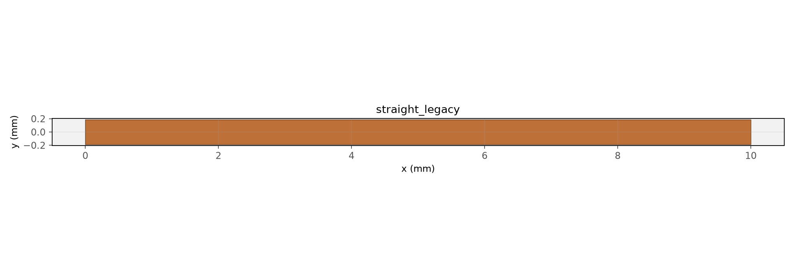 |
| R002 | Straight-line control · port mesh 0.20 mm | straight_corrected | Numerical controls | completed | direct | 7.15 | 0.37 | 0.14 | 0.3 | 0.0 | 3 | — | — | |
| R003 | Symmetric 45° · L 7.15 / W 0.37 / gap 0.14 · 2 fingers / overlap 0.3 | s45_initial | Compensation scan | completed | direct | 7.15 | 0.37 | 0.14 | 0.3 | 0.0 | 3 | -14.613 | 8.89 | 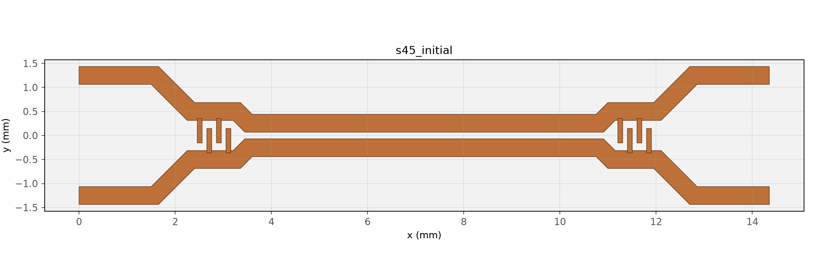 |
| R004 | Straight-line control · port mesh 0.10 mm | line_p10 | Numerical controls | completed | direct | 7.15 | 0.37 | 0.14 | 0.3 | 0.0 | 3 | — | — | |
| R005 | Straight-line control · port mesh 0.05 mm | line_p05 | Numerical controls | incomplete | direct | 7.15 | 0.37 | 0.14 | 0.3 | 0.0 | ? | — | — | 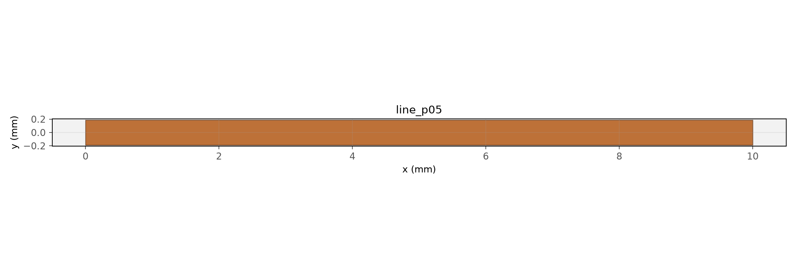 |
| R006 | Symmetric 45° · L 7.15 / W 0.37 / gap 0.12 · 3 fingers / overlap 0.3 | s45_n3_o0.30_s0.12 | Compensation scan | completed | direct | 7.15 | 0.37 | 0.12 | 0.3 | 0.0 | 3 | -14.84 | 11.35 | |
| R007 | Symmetric 45° · L 7.15 / W 0.37 / gap 0.14 · 3 fingers / overlap 0.3 | s45_n3_o0.30_s0.14 | Compensation scan | completed | direct | 7.15 | 0.37 | 0.14 | 0.3 | 0.0 | 3 | -16.35 | 12.39 | 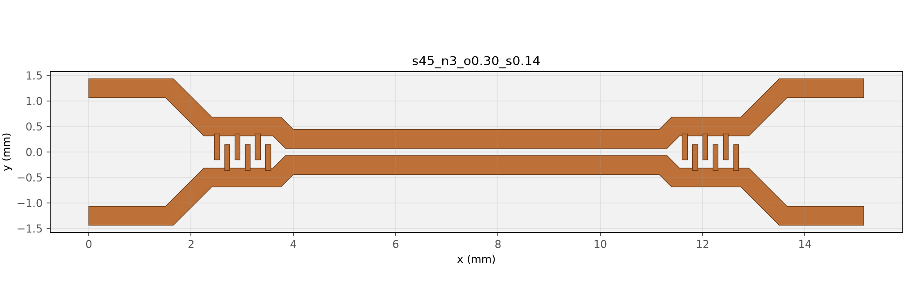 |
| R008 | Symmetric 45° · L 7.15 / W 0.37 / gap 0.16 · 3 fingers / overlap 0.3 | s45_n3_o0.30_s0.16 | Compensation scan | completed | direct | 7.15 | 0.37 | 0.16 | 0.3 | 0.0 | 3 | -17.691 | 13.34 | |
| R009 | Symmetric 45° · L 7.15 / W 0.37 / gap 0.12 · 3 fingers / overlap 0.4 | s45_n3_o0.40_s0.12 | Compensation scan | completed | direct | 7.15 | 0.37 | 0.12 | 0.4 | 0.0 | 3 | -16.475 | 19.37 | 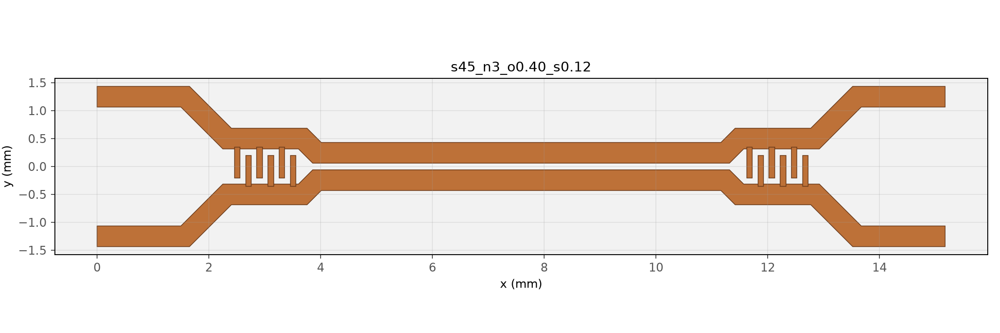 |
| R010 | Symmetric 45° · L 7.15 / W 0.37 / gap 0.14 · 3 fingers / overlap 0.4 | s45_n3_o0.40_s0.14 | Compensation scan | completed | direct | 7.15 | 0.37 | 0.14 | 0.4 | 0.0 | 3 | -18.206 | 16.19 | 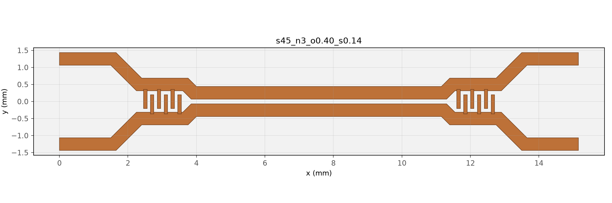 |
| R011 | Symmetric 45° · L 7.15 / W 0.37 / gap 0.16 · 3 fingers / overlap 0.4 | s45_n3_o0.40_s0.16 | Compensation scan | completed | direct | 7.15 | 0.37 | 0.16 | 0.4 | 0.0 | 3 | -19.834 | 11.76 | 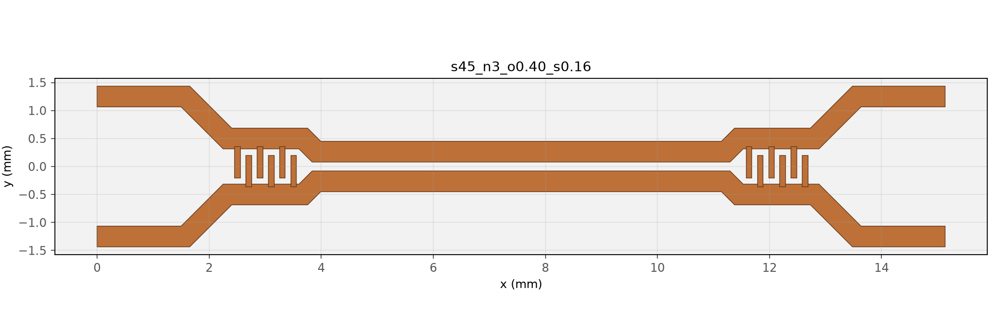 |
| R012 | Asymmetric 90° · L 7.15 / W 0.37 / gap 0.12 · 3 fingers / overlap 0.4 | a90_n3 | Topology comparison | completed | direct | 7.15 | 0.37 | 0.12 | 0.4 | 0.0 | 3 | -16.288 | 20.38 | 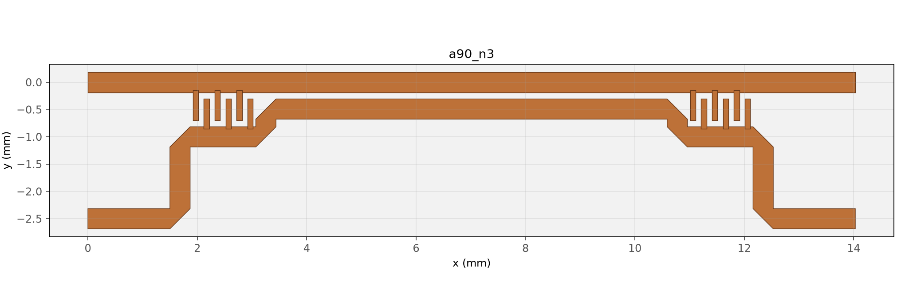 |
| R013 | Symmetric 45° · L 7.15 / W 0.37 / gap 0.12 · 2 fingers / overlap 0.43 | s45_n2_o43 | Compensation scan | completed | direct | 7.15 | 0.37 | 0.12 | 0.43 | 0.0 | 3 | -14.28 | 12.97 | 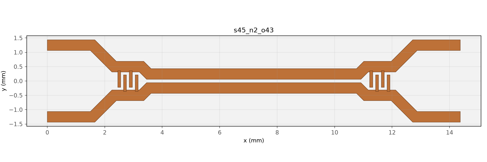 |
| R014 | Symmetric 90° · L 7.15 / W 0.37 / gap 0.12 · 3 fingers / overlap 0.4 | s90_n3 | Topology comparison | completed | direct | 7.15 | 0.37 | 0.12 | 0.4 | 0.0 | 3 | -15.339 | 16.63 | 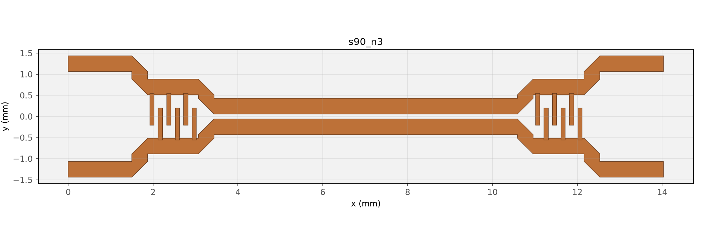 |
| R015 | Symmetric 45° · L 7.15 / W 0.37 / gap 0.1 · 2 fingers / overlap 0.6 | s45_n2_long_s0.10 | Compensation scan | completed | direct | 7.15 | 0.37 | 0.1 | 0.6 | 0.0 | 3 | -12.943 | 13.54 | 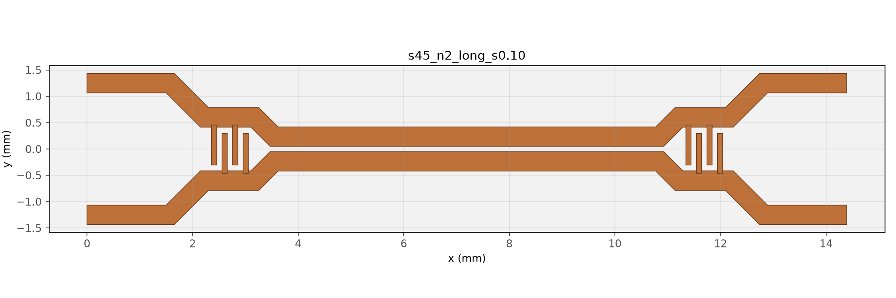 |
| R016 | Symmetric 45° · L 7.15 / W 0.37 / gap 0.12 · 2 fingers / overlap 0.6 | s45_n2_long_s0.12 | Compensation scan | completed | direct | 7.15 | 0.37 | 0.12 | 0.6 | 0.0 | 3 | -14.673 | 14.47 | 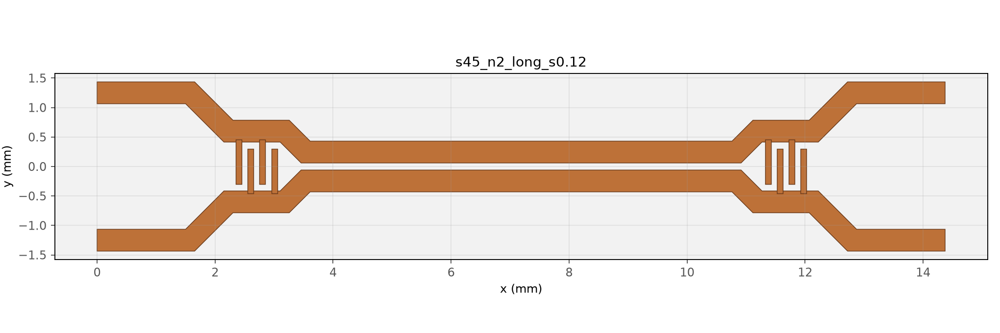 |
| R017 | Symmetric 45° · L 7.15 / W 0.37 / gap 0.14 · 2 fingers / overlap 0.6 | s45_n2_long_s0.14 | Compensation scan | completed | direct | 7.15 | 0.37 | 0.14 | 0.6 | 0.0 | 3 | -16.019 | 16.56 | 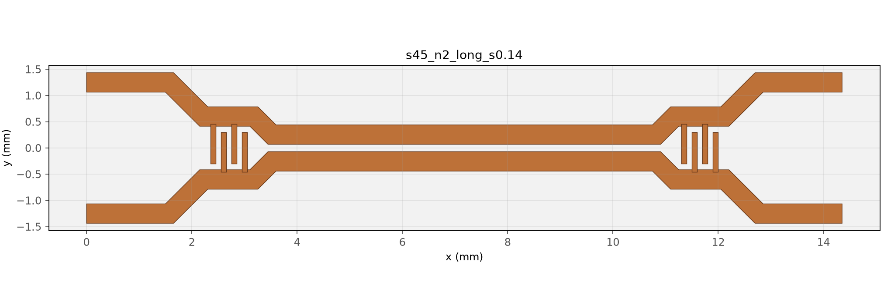 |
| R018 | Symmetric 45° · L 7.15 / W 0.37 / gap 0.1 · 3 fingers / overlap 0.6 | s45_n3_long_s0.10 | Compensation scan | completed | direct | 7.15 | 0.37 | 0.1 | 0.6 | 0.0 | 3 | -15.701 | 15.41 | 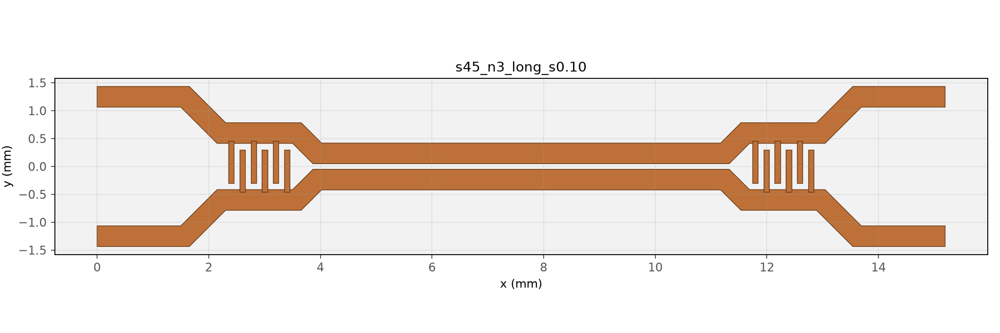 |
| R019 | Symmetric 45° · L 7.15 / W 0.37 / gap 0.12 · 3 fingers / overlap 0.6 | s45_n3_long_s0.12 | Compensation scan | completed | direct | 7.15 | 0.37 | 0.12 | 0.6 | 0.0 | 3 | -18.467 | 8.54 | 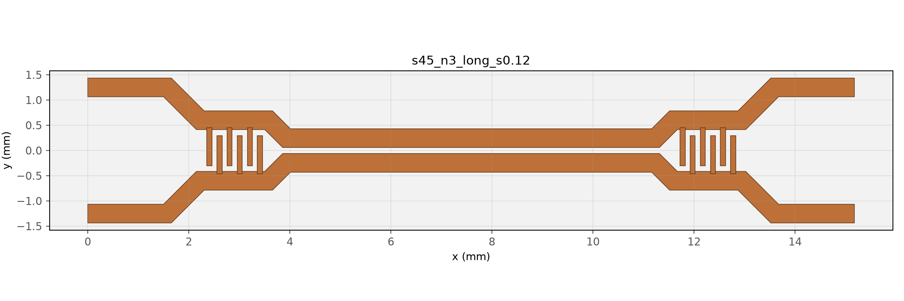 |
| R020 | Symmetric 45° · L 7.15 / W 0.37 / gap 0.14 · 3 fingers / overlap 0.6 | s45_n3_long_s0.14 | Compensation scan | completed | direct | 7.15 | 0.37 | 0.14 | 0.6 | 0.0 | 3 | -20.489 | 4.63 | 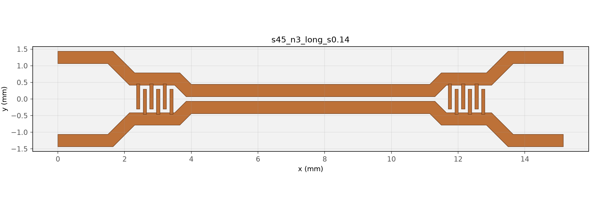 |
| R021 | Symmetric 45° · L 7.15 / W 0.37 / gap 0.1 · 3 fingers / overlap 0.4 | s45_trim_w0.37 | Width scan | completed | direct | 7.15 | 0.37 | 0.1 | 0.4 | 0.0 | 3 | -14.32 | 18.29 | 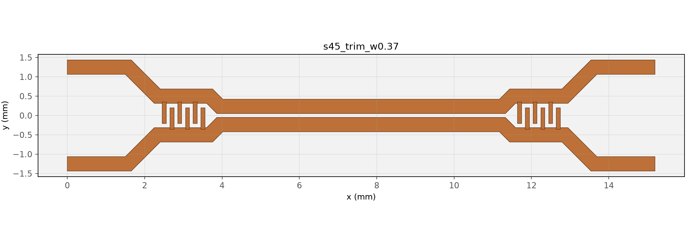 |
| R022 | Symmetric 45° · L 7.15 / W 0.39 / gap 0.1 · 3 fingers / overlap 0.4 | s45_trim_w0.39 | Width scan | completed | direct | 7.15 | 0.39 | 0.1 | 0.4 | 0.0 | 3 | -14.827 | 19.71 | |
| R023 | Symmetric 45° · L 7.15 / W 0.41 / gap 0.1 · 3 fingers / overlap 0.4 | s45_trim_w0.41 | Width scan | completed | direct | 7.15 | 0.41 | 0.1 | 0.4 | 0.0 | 3 | -14.909 | 18.12 | 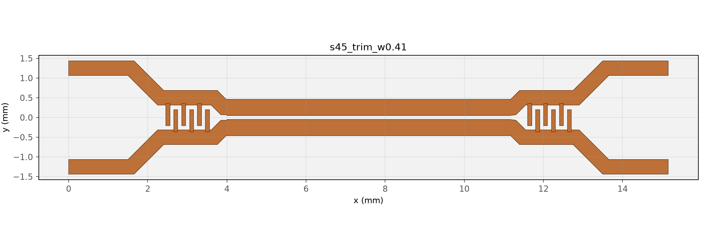 |
| R024 | Symmetric 45° · L 7.15 / W 0.43 / gap 0.1 · 3 fingers / overlap 0.4 | s45_trim_w0.43 | Width scan | completed | direct | 7.15 | 0.43 | 0.1 | 0.4 | 0.0 | 3 | -15.028 | 16.71 | 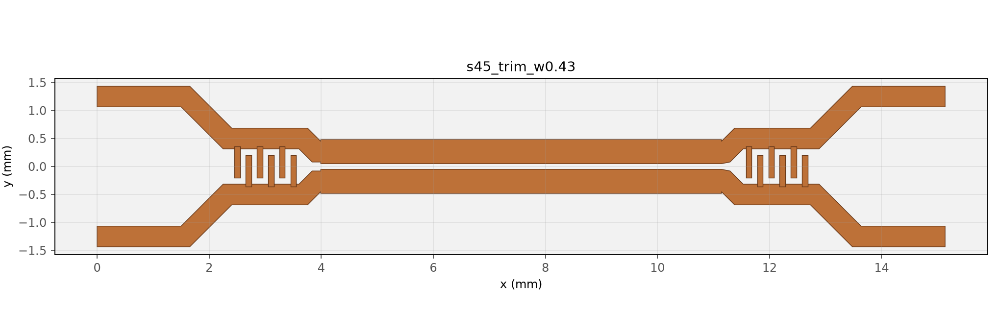 |
| R025 | Symmetric 45° · L 7.15 / W 0.39 / gap 0.1 · 3 fingers / overlap 0.4 | s45_core_control | Ground opening | completed | direct | 7.15 | 0.39 | 0.1 | 0.4 | 0.0 | 3 | -14.644 | 18.73 | 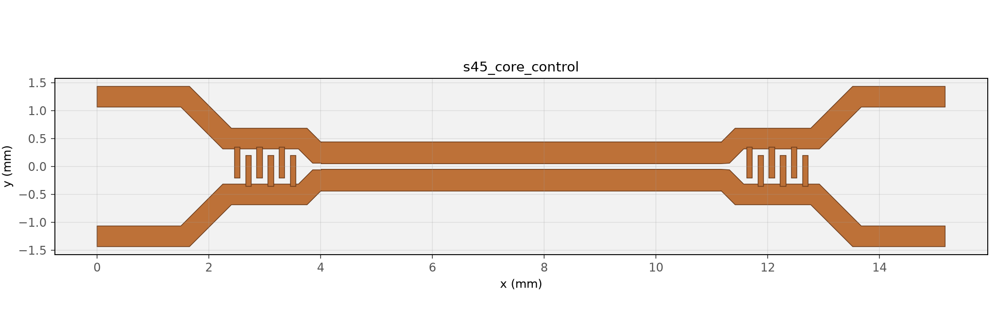 |
| R026 | Symmetric 45° · L 7.15 / W 0.4 / gap 0.1 · 3 fingers / overlap 0.4 | s45_check_medium | Surface mesh check | completed | direct | 7.15 | 0.4 | 0.1 | 0.4 | 0.0 | 3 | -14.561 | 15.45 | 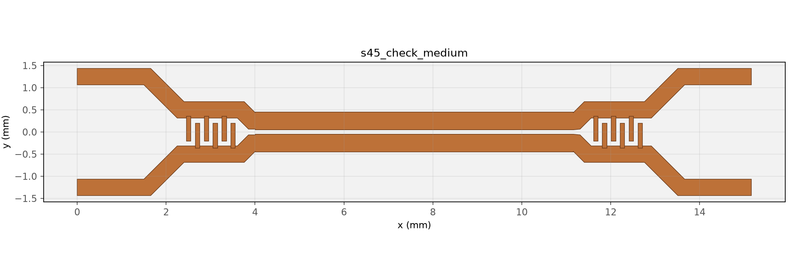 |
| R027 | Symmetric 45° · L 7.15 / W 0.4 / gap 0.1 · 3 fingers / overlap 0.4 | s45_check_fine | Surface mesh check | completed | direct | 7.15 | 0.4 | 0.1 | 0.4 | 0.0 | 3 | -14.766 | 14.82 | 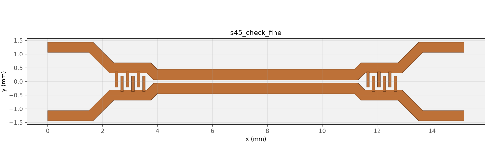 |
| R028 | Symmetric 45° · L 7.15 / W 0.39 / gap 0.1 · 3 fingers / overlap 0.4 | s45_core_relief | Ground opening | completed | direct | 7.15 | 0.39 | 0.1 | 0.4 | 0.0 | 3 | -14.893 | 21.15 | |
| R029 | Symmetric 45° · L 6 / W 0.37 / gap 0.1 · 3 fingers / overlap 0.4 | s45_L6_w0.37 | Length and local tuning | completed | direct | 6.0 | 0.37 | 0.1 | 0.4 | 0.0 | 3 | -13.169 | 25.37 | 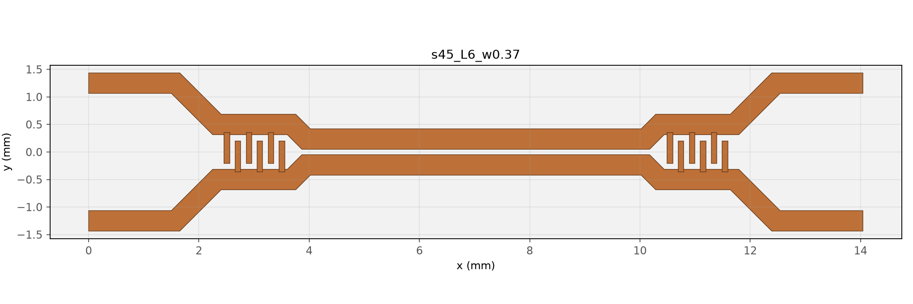 |
| R030 | Symmetric 45° · L 6 / W 0.4 / gap 0.1 · 3 fingers / overlap 0.4 | s45_L6_w0.4 | Length and local tuning | completed | direct | 6.0 | 0.4 | 0.1 | 0.4 | 0.0 | 3 | -13.605 | 22.6 | 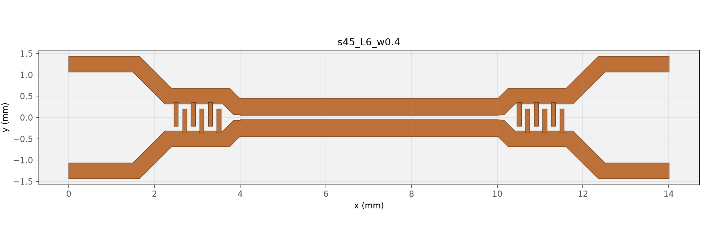 |
| R031 | Symmetric 45° · L 6.5 / W 0.4 / gap 0.1 · 3 fingers / overlap 0.4 | s45_L6.5_w0.4 | Length and local tuning | completed | direct | 6.5 | 0.4 | 0.1 | 0.4 | 0.0 | 3 | -14.014 | 21.14 | 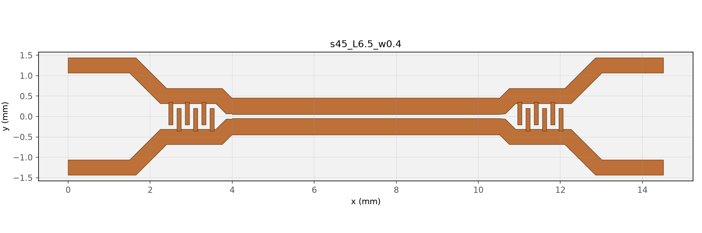 |
| R032 | Symmetric 45° · L 7.8 / W 0.37 / gap 0.1 · 3 fingers / overlap 0.4 | s45_L7.8_w0.37 | Length and local tuning | completed | direct | 7.8 | 0.37 | 0.1 | 0.4 | 0.0 | 3 | -15.722 | 16.89 | 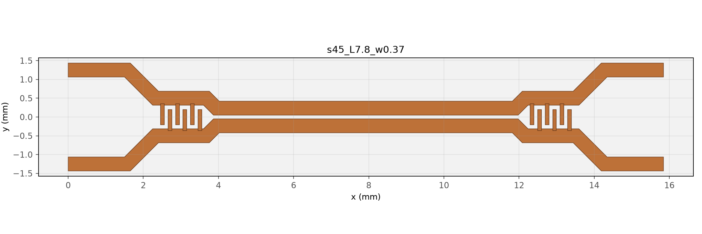 |
| R033 | Symmetric 45° · L 7.15 / W 0.41 / gap 0.1 · 3 fingers / overlap 0.4 | s45_short_jog | Length and local tuning | completed | direct | 7.15 | 0.41 | 0.1 | 0.4 | 0.0 | 3 | -14.69 | 18.41 | 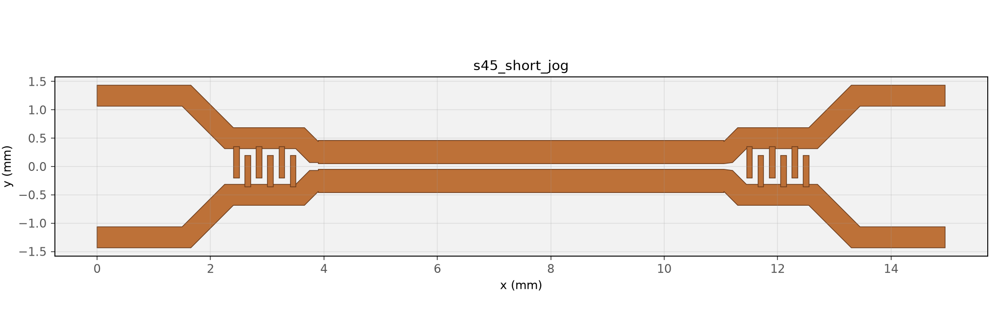 |
| R034 | Symmetric 45° · L 7.15 / W 0.4 / gap 0.1 · 3 fingers / overlap 0.36 | refine_o0.36_w0.40 | Length and local tuning | completed | direct | 7.15 | 0.4 | 0.1 | 0.36 | 0.0 | 3 | -14.206 | 13.01 | 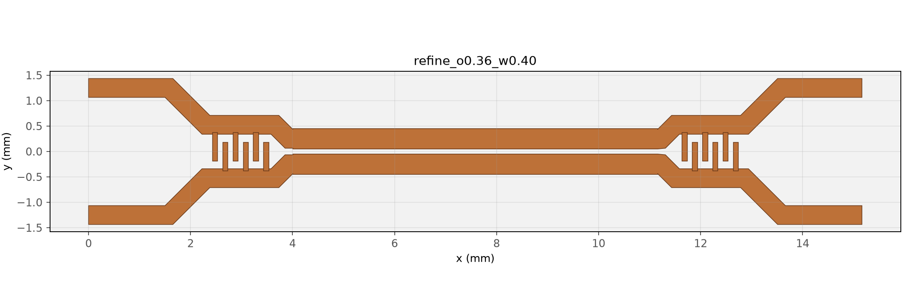 |
| R035 | Symmetric 45° · L 7.15 / W 0.39 / gap 0.1 · 3 fingers / overlap 0.46 | refine_o0.46_w0.39 | Length and local tuning | completed | direct | 7.15 | 0.39 | 0.1 | 0.46 | 0.0 | 3 | -14.945 | 19.95 | 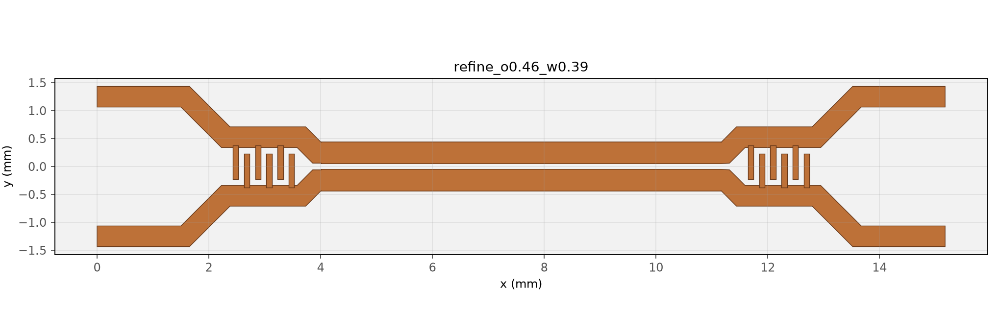 |
| R036 | Symmetric 45° · L 7.15 / W 0.41 / gap 0.1 · 3 fingers / overlap 0.46 | refine_o0.46_w0.41 | Length and local tuning | completed | direct | 7.15 | 0.41 | 0.1 | 0.46 | 0.0 | 3 | -15.166 | 19.3 | 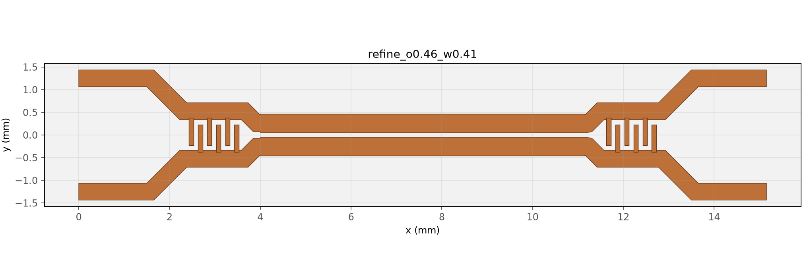 |
| R037 | Symmetric 45° · L 7.15 / W 0.41 / gap 0.1 · 3 fingers / overlap 0.48 | refine_o0.48_w0.41 | Length and local tuning | completed | direct | 7.15 | 0.41 | 0.1 | 0.48 | 0.0 | 3 | -15.36 | 22.29 | 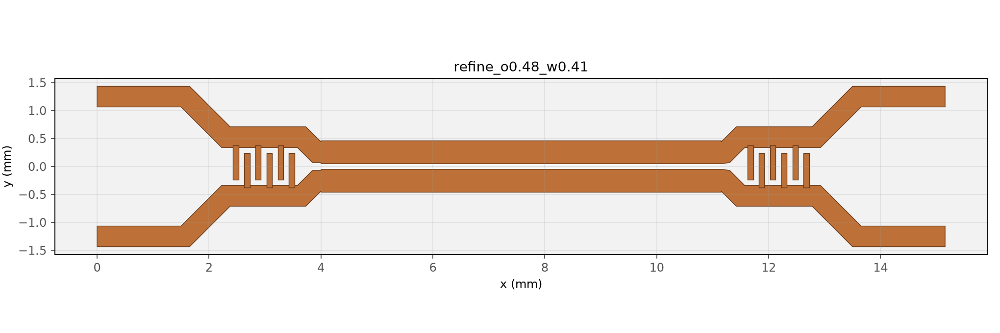 |
| R038 | Symmetric 45° · L 7.15 / W 0.4 / gap 0.1 · 3 fingers / overlap 0.4 | s45_check_coarse | Surface mesh check | completed | direct | 7.15 | 0.4 | 0.1 | 0.4 | 0.0 | 3 | -14.641 | 17.56 | |
| R039 | Symmetric 45° · L 6 / W 0.37 / gap 0.12 · 3 fingers / overlap 0.4 | short_ref_s0.12 | Length and local tuning | completed | direct | 6.0 | 0.37 | 0.12 | 0.4 | 0.0 | 3 | -14.631 | 27.22 | 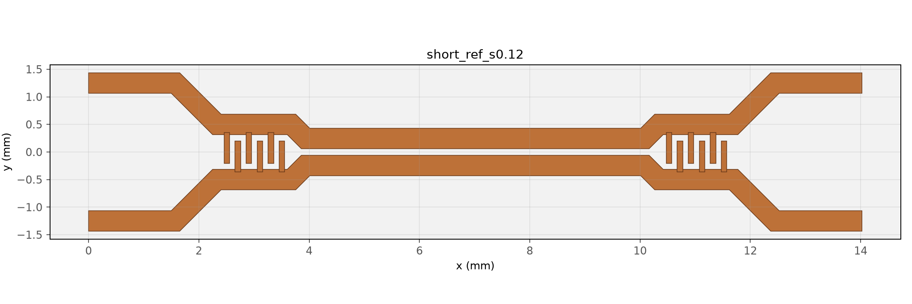 |
| R040 | Symmetric 45° · L 6 / W 0.37 / gap 0.13 · 3 fingers / overlap 0.4 | short_ref_s0.13 | Length and local tuning | completed | direct | 6.0 | 0.37 | 0.13 | 0.4 | 0.0 | 3 | -15.273 | 29.04 | 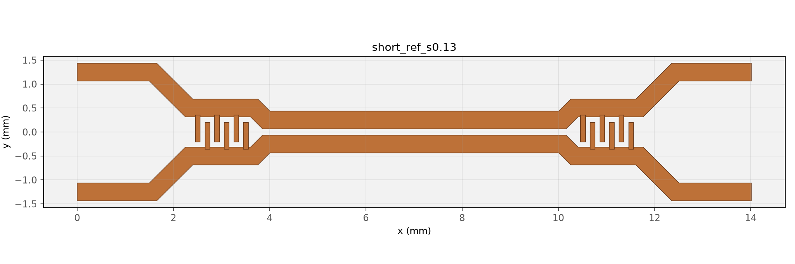 |
| R041 | Symmetric 45° · L 6.9 / W 0.4 / gap 0.1 · 3 fingers / overlap 0.48 | candidate_A | Length and local tuning | completed | direct | 6.9 | 0.4 | 0.1 | 0.48 | 0.0 | 3 | -15.222 | 25.21 | 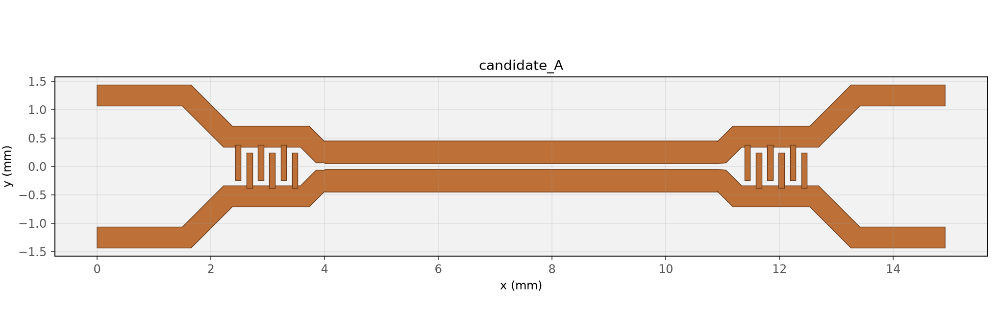 |
| R042 | Symmetric 45° · L 5.5 / W 0.37 / gap 0.13 · 3 fingers / overlap 0.4 | short55_fine | Length and local tuning | completed | direct | 5.5 | 0.37 | 0.13 | 0.4 | 0.0 | 3 | -14.843 | 30.49 | 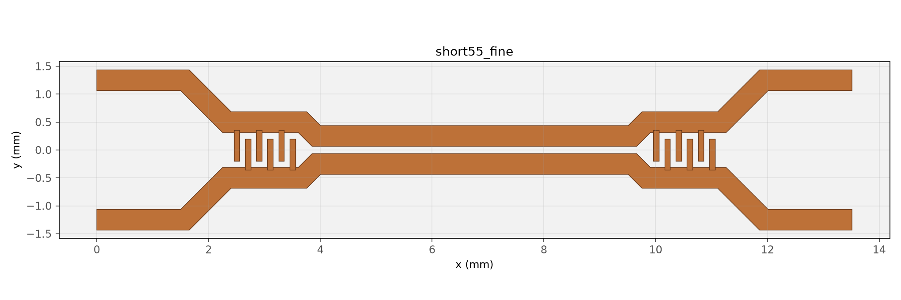 |
| R043 | Symmetric 45° · L 6 / W 0.38 / gap 0.12 · 3 fingers / overlap 0.43 | short_fine | Length and local tuning | completed | direct | 6.0 | 0.38 | 0.12 | 0.43 | 0.0 | 3 | -15.051 | 35.87 | 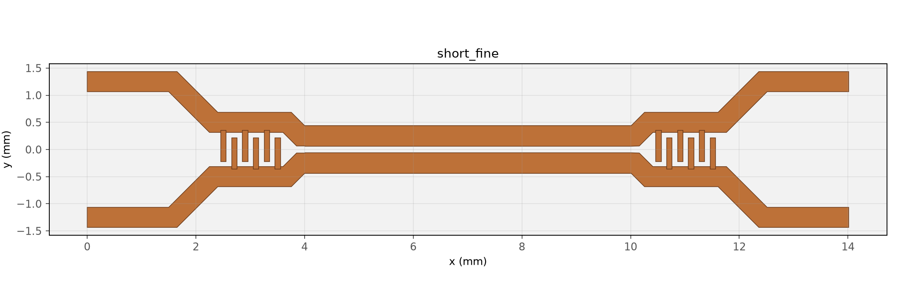 |
| R044 | Earlier apparent optimum · surface mesh | proposal | Length and local tuning | completed | direct | 5.6 | 0.37 | 0.13 | 0.41 | 0.0 | 3 | -15.064 | 34.1 | 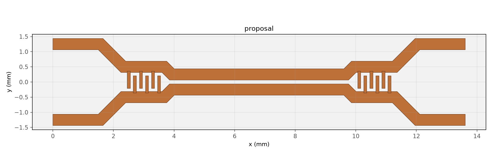 |
| R045 | Same earlier geometry · edge refinement | proposal_edges | Edge refinement / retune | completed | direct | 5.6 | 0.37 | 0.13 | 0.41 | 0.04 | 3 | -15.165 | 19.68 | 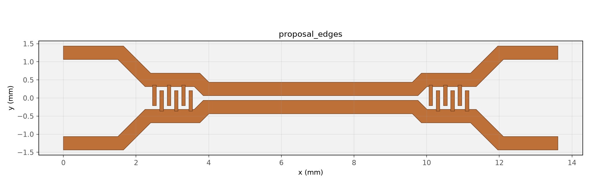 |
| R046 | Symmetric 45° · L 6 / W 0.38 / gap 0.12 · 3 fingers / overlap 0.43 | short_ref_o43 | Length and local tuning | completed | direct | 6.0 | 0.38 | 0.12 | 0.43 | 0.0 | 3 | -14.913 | 34.61 | 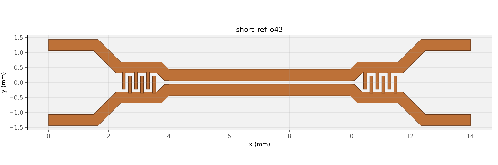 |
| R047 | Symmetric 45° · L 7.15 / W 0.39 / gap 0.1 · 3 fingers / overlap 0.4 | relief_refined | Ground opening | completed | direct | 7.15 | 0.39 | 0.1 | 0.4 | 0.0 | 3 | -14.918 | 17.32 | 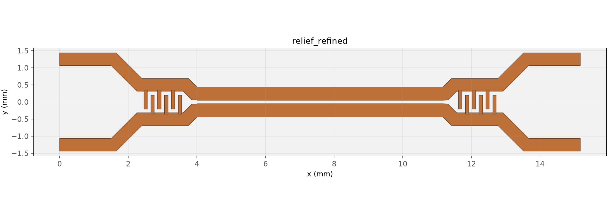 |
| R048 | Edge retune · 0.48 mm overlap | edge_tune_o48 | Edge refinement / retune | completed | direct | 5.6 | 0.37 | 0.13 | 0.48 | 0.04 | 1 | -15.446 | 29.46 | 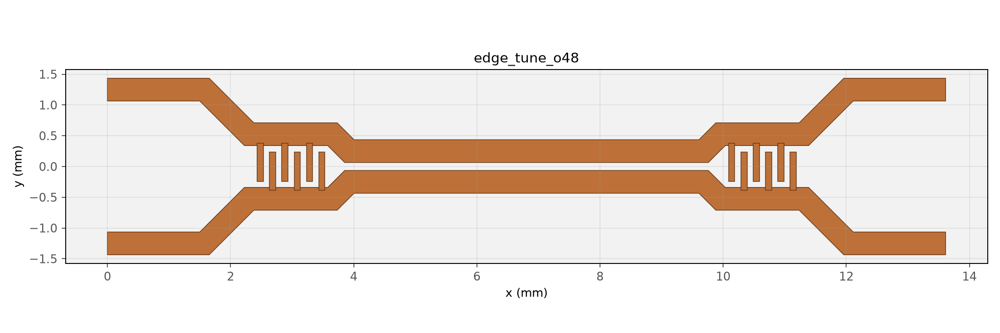 |
| R049 | Edge retune · 0.60 mm overlap | edge_tune_o60 | Edge refinement / retune | completed | direct | 5.6 | 0.37 | 0.13 | 0.6 | 0.04 | 1 | -16.142 | 21.44 | 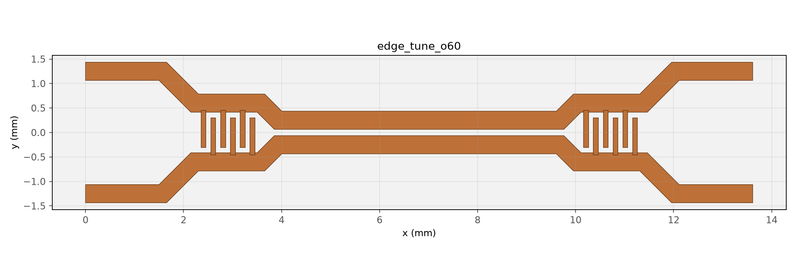 |
| R050 | Edge-refined candidate · 5.3 mm section | edge_short53 | Edge refinement / retune | completed | direct | 5.3 | 0.37 | 0.13 | 0.48 | 0.04 | 1 | -15.251 | 35.01 | 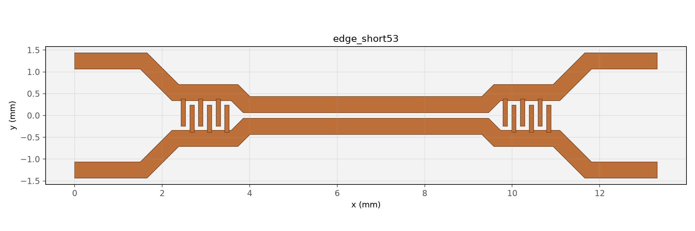 |
| R051 | Symmetric 45° · L 7.15 / W 0.39 / gap 0.1 · 3 fingers / overlap 0.4 | core_refined_control | Ground opening | completed | direct | 7.15 | 0.39 | 0.1 | 0.4 | 0.0 | 3 | -14.635 | 15.15 | |
| R052 | Selected symmetric prototype | final51 | Nominal band validation | completed | direct | 5.1 | 0.37 | 0.13 | 0.48 | 0.04 | 5 | -15.139 | 32.16 | 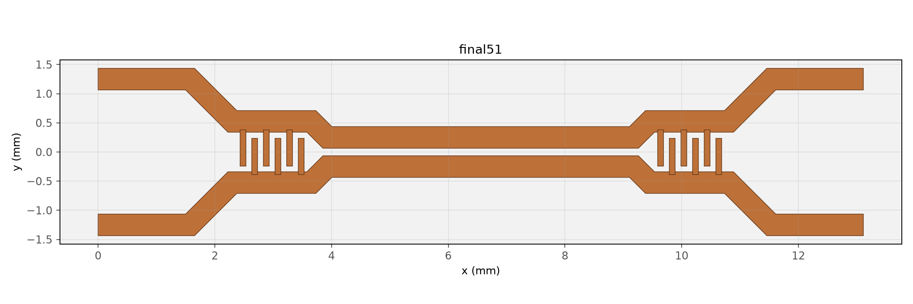 |
| R053 | Selected geometry · dielectric εr 4.2 | final51_er42 | Sensitivity checks | completed | direct | 5.1 | 0.37 | 0.13 | 0.48 | 0.04 | 1 | -14.973 | 28.81 | 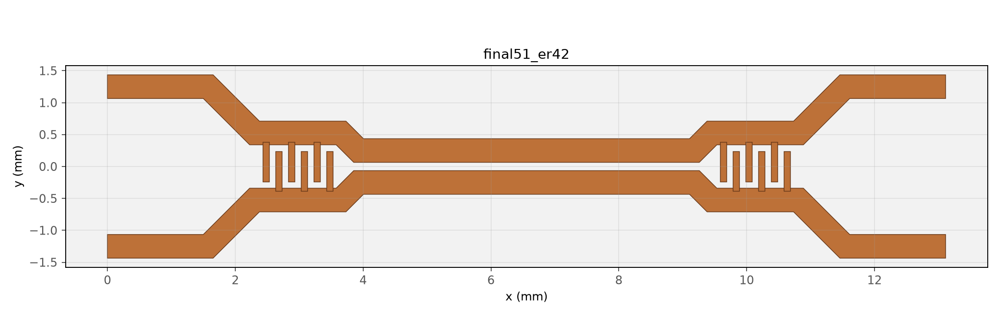 |
| R054 | Selected geometry · dielectric εr 4.6 | final51_er46 | Sensitivity checks | completed | direct | 5.1 | 0.37 | 0.13 | 0.48 | 0.04 | 1 | -15.304 | 28.8 | 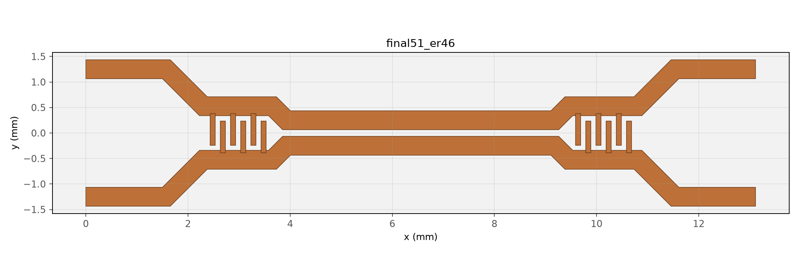 |
| R055 | Selected geometry · widths −10 µm / gaps +10 µm | final51_narrow | Sensitivity checks | completed | direct | 5.1 | 0.36 | 0.14 | 0.47 | 0.04 | 1 | -15.437 | 31.39 | 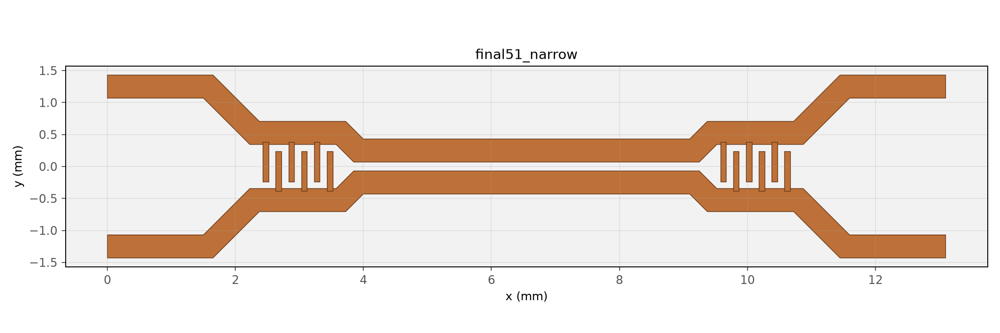 |
| R056 | Selected geometry · widths +10 µm / gaps −10 µm | final51_wide | Sensitivity checks | completed | direct | 5.1 | 0.38 | 0.12000000000000001 | 0.49 | 0.04 | 1 | -14.852 | 32.46 | 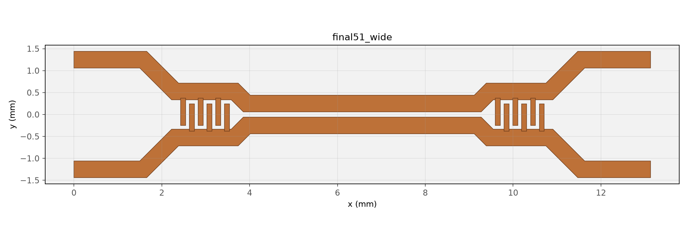 |
| R057 | Selected geometry without combs | final51_bare | Final bare control | completed | direct | 5.1 | 0.37 | 0.13 | 0.48 | 0.04 | 3 | -14.925 | 7.11 | 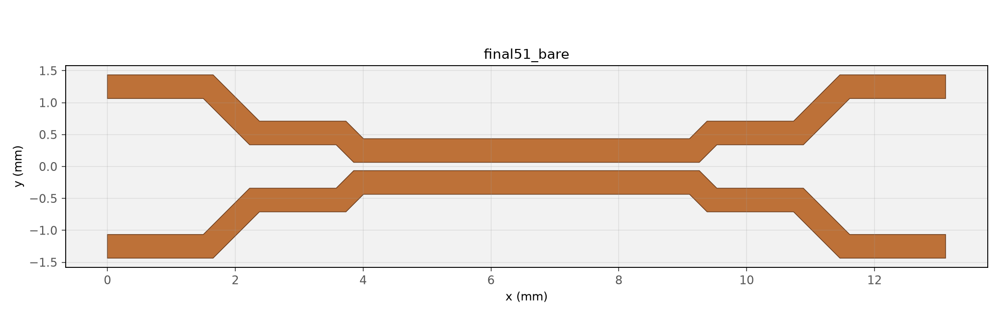 |
| R058 | Selected geometry · finite copper · nine band points | final51_copper9 | Nominal band validation | completed | direct | 5.1 | 0.37 | 0.13 | 0.48 | 0.04 | 9 | -15.286 | 30.5 | 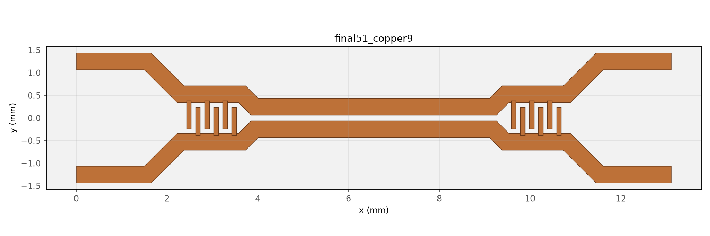 |
| L001 | Historical asymmetric/default · comb | sparams_opt_comb3 | Historical studies | completed | fitted | ? | ? | ? | ? | ? | 41 | -15.007 | 17.96 | |
| L002 | Historical symmetric · comb | sparams_opt_comb3_sym_w0.38s0.11o0.27y0.8j0.9b45 | Historical studies | completed | fitted | ? | 0.38 | 0.11 | 0.27 | ? | 41 | -14.623 | 15.62 | |
| L003 | Historical symmetric · comb | sparams_opt_comb3_sym_w0.38s0.11o0.27y1.4j0.9b90 | Historical studies | completed | fitted | ? | 0.38 | 0.11 | 0.27 | ? | 41 | -14.918 | 24.43 | |
| L004 | Historical symmetric · comb | sparams_opt_comb3_sym_w0.38s0.11o0.27y1.6j0.9b90 | Historical studies | completed | fitted | ? | 0.38 | 0.11 | 0.27 | ? | 41 | -15.118 | 22.88 | |
| L005 | Historical symmetric · comb | sparams_opt_comb3_sym_w0.38s0.11o0.27y1j0.9b45 | Historical studies | completed | fitted | ? | 0.38 | 0.11 | 0.27 | ? | 41 | -15.053 | 19.2 | |
| L006 | Historical asymmetric/default · comb | sparams_opt_comb3_w0.32s0.1o0.27 | Historical studies | completed | fitted | ? | 0.32 | 0.1 | 0.27 | ? | 41 | -14.762 | 14.72 | |
| L007 | Historical asymmetric/default · comb | sparams_opt_comb3_w0.35s0.09o0.27 | Historical studies | completed | fitted | ? | 0.35 | 0.09 | 0.27 | ? | 41 | -14.041 | 16.79 | |
| L008 | Historical asymmetric/default · comb | sparams_opt_comb3_w0.35s0.11o0.27 | Historical studies | completed | fitted | ? | 0.35 | 0.11 | 0.27 | ? | 41 | -16.081 | 16.05 | |
| L009 | Historical asymmetric/default · comb | sparams_opt_comb3_w0.35s0.1o0.25 | Historical studies | completed | fitted | ? | 0.35 | 0.1 | 0.25 | ? | 41 | -14.821 | 15.99 | |
| L010 | Historical asymmetric/default · comb | sparams_opt_comb3_w0.35s0.1o0.29 | Historical studies | completed | fitted | ? | 0.35 | 0.1 | 0.29 | ? | 41 | -15.293 | 16.59 | |
| L011 | Historical asymmetric/default · comb | sparams_opt_comb3_w0.37s0.11o0.27y0.9j0.9 | Historical studies | completed | fitted | ? | 0.37 | 0.11 | 0.27 | ? | 41 | -14.865 | 20.7 | |
| L012 | Historical asymmetric/default · comb | sparams_opt_comb3_w0.37s0.11o0.27y1.1j0.9 | Historical studies | completed | fitted | ? | 0.37 | 0.11 | 0.27 | ? | 41 | -14.685 | 22.03 | |
| L013 | Historical asymmetric/default · comb | sparams_opt_comb3_w0.37s0.11o0.27y1.3j0.9 | Historical studies | completed | fitted | ? | 0.37 | 0.11 | 0.27 | ? | 41 | -15.014 | 21.97 | |
| L014 | Historical asymmetric/default · comb | sparams_opt_comb3_w0.37s0.11o0.27y1j0.8 | Historical studies | completed | fitted | ? | 0.37 | 0.11 | 0.27 | ? | 41 | -14.574 | 23.81 | |
| L015 | Historical asymmetric/default · comb | sparams_opt_comb3_w0.37s0.11o0.27y1j0.9 | Historical studies | completed | fitted | ? | 0.37 | 0.11 | 0.27 | ? | 41 | -14.792 | 20.94 | |
| L016 | Historical asymmetric/default · comb | sparams_opt_comb3_w0.37s0.12o0.27y1.1j0.9 | Historical studies | completed | fitted | ? | 0.37 | 0.12 | 0.27 | ? | 41 | -15.79 | 22.95 | |
| L017 | Historical asymmetric/default · comb | sparams_opt_comb3_w0.37s0.12o0.27y1j0.8 | Historical studies | completed | fitted | ? | 0.37 | 0.12 | 0.27 | ? | 41 | -15.381 | 24.26 | |
| L018 | Historical asymmetric/default · comb | sparams_opt_comb3_w0.37s0.13o0.27y1j0.8 | Historical studies | completed | fitted | ? | 0.37 | 0.13 | 0.27 | ? | 41 | -16.236 | 24.38 | |
| L019 | Historical asymmetric/default · comb | sparams_opt_comb3_w0.37s0.1o0.25 | Historical studies | completed | fitted | ? | 0.37 | 0.1 | 0.25 | ? | 41 | -14.686 | 16.59 | |
| L020 | Historical asymmetric/default · comb | sparams_opt_comb3_w0.37s0.1o0.25y1j0.9 | Historical studies | completed | fitted | ? | 0.37 | 0.1 | 0.25 | ? | 41 | -13.797 | 17.22 | |
| L021 | Historical asymmetric/default · comb | sparams_opt_comb3_w0.37s0.1o0.27j0.9 | Historical studies | completed | fitted | ? | 0.37 | 0.1 | 0.27 | ? | 41 | -13.931 | 20.96 | |
| L022 | Historical asymmetric/default · comb | sparams_opt_comb3_w0.37s0.1o0.27j1.1 | Historical studies | completed | fitted | ? | 0.37 | 0.1 | 0.27 | ? | 41 | -14.57 | 19.87 | |
| L023 | Historical asymmetric/default · comb | sparams_opt_comb3_w0.37s0.1o0.27y0.9 | Historical studies | completed | fitted | ? | 0.37 | 0.1 | 0.27 | ? | 41 | -15.081 | 17.34 | |
| L024 | Historical asymmetric/default · comb | sparams_opt_comb3_w0.37s0.1o0.27y1.15 | Historical studies | completed | fitted | ? | 0.37 | 0.1 | 0.27 | ? | 41 | -14.725 | 17.44 | |
| L025 | Historical asymmetric/default · comb | sparams_opt_comb3_w0.37s0.1o0.27y1.6 | Historical studies | completed | fitted | ? | 0.37 | 0.1 | 0.27 | ? | 41 | -15.142 | 16.11 | |
| L026 | Historical asymmetric/default · comb | sparams_opt_comb3_w0.37s0.1o0.27y1 | Historical studies | completed | fitted | ? | 0.37 | 0.1 | 0.27 | ? | 41 | -14.996 | 18.28 | |
| L027 | Historical asymmetric/default · comb | sparams_opt_comb3_w0.37s0.1o0.27y1j0.9 | Historical studies | completed | fitted | ? | 0.37 | 0.1 | 0.27 | ? | 41 | -14.018 | 19.78 | |
| L028 | Historical asymmetric/default · comb | sparams_opt_comb3_w0.37s0.1o0.29 | Historical studies | completed | fitted | ? | 0.37 | 0.1 | 0.29 | ? | 41 | -14.979 | 17.95 | |
| L029 | Historical asymmetric/default · comb | sparams_opt_comb3_w0.38s0.11o0.27y1j0.8 | Historical studies | completed | fitted | ? | 0.38 | 0.11 | 0.27 | ? | 41 | -14.757 | 20.78 | |
| L030 | Historical asymmetric/default · comb | sparams_opt_comb3_w0.38s0.11o0.27y1j0.9 | Historical studies | completed | fitted | ? | 0.38 | 0.11 | 0.27 | ? | 41 | -15.226 | 23.12 | |
| L031 | Historical asymmetric/default · comb | sparams_opt_comb3_w0.38s0.1o0.27 | Historical studies | completed | fitted | ? | 0.38 | 0.1 | 0.27 | ? | 41 | -15.309 | 17.8 | |
| L032 | Historical asymmetric/default · comb | sparams_opt_comb3_w0.39s0.1o0.27 | Historical studies | completed | fitted | ? | 0.39 | 0.1 | 0.27 | ? | 41 | -15.393 | 18.2 | |
| L033 | Historical asymmetric/default · comb | sparams_opt_comb3_w0.42s0.09o0.27 | Historical studies | completed | fitted | ? | 0.42 | 0.09 | 0.27 | ? | 41 | -14.985 | 18.6 | |
| L034 | Historical asymmetric/default · comb | sparams_opt_comb3_w0.4s0.09o0.27 | Historical studies | completed | fitted | ? | 0.4 | 0.09 | 0.27 | ? | 41 | -14.643 | 17.94 | |
| L035 | Historical asymmetric/default · comb | sparams_opt_comb3_w0.4s0.1o0.27 | Historical studies | completed | fitted | ? | 0.4 | 0.1 | 0.27 | ? | 41 | -15.726 | 19.85 | |
| L036 | Historical asymmetric/default · bare | sparams_opt_nocomb | Historical studies | completed | fitted | ? | ? | ? | ? | ? | 41 | -11.824 | 6.9 | |
| L037 | Historical asymmetric/default · bare | sparams_opt_nocomb_atcomb | Historical studies | completed | fitted | ? | ? | ? | ? | ? | 41 | -11.616 | 7.49 | |
| L038 | Historical asymmetric/default · bare | sparams_opt_nocomb_atcomb_w0.31s0.1o0.27 | Historical studies | completed | fitted | ? | 0.31 | 0.1 | 0.27 | ? | 41 | -10.997 | 8.98 | |
| L039 | Historical asymmetric/default · bare | sparams_opt_nocomb_atcomb_w0.32s0.1o0.27 | Historical studies | completed | fitted | ? | 0.32 | 0.1 | 0.27 | ? | 41 | -11.097 | 8.64 | |
| L040 | Historical asymmetric/default · bare | sparams_opt_nocomb_atcomb_w0.33s0.1o0.27 | Historical studies | completed | fitted | ? | 0.33 | 0.1 | 0.27 | ? | 41 | -11.25 | 8.4 | |
| L041 | Historical asymmetric/default · bare | sparams_opt_nocomb_atcomb_w0.34s0.1o0.27 | Historical studies | completed | fitted | ? | 0.34 | 0.1 | 0.27 | ? | 41 | -11.31 | 8.14 | |
| L042 | Historical asymmetric/default · bare | sparams_opt_nocomb_atcomb_w0.36s0.1o0.27 | Historical studies | completed | fitted | ? | 0.36 | 0.1 | 0.27 | ? | 41 | -11.579 | 7.69 | |
| L043 | Historical asymmetric/default · bare | sparams_opt_nocomb_atcomb_w0.3s0.1o0.27 | Historical studies | completed | fitted | ? | 0.3 | 0.1 | 0.27 | ? | 41 | -10.84 | 9.41 | |
| L044 | Historical asymmetric/default · bare | sparams_opt_nocomb_w0.37s0.1o0.27j0.9 | Historical studies | completed | fitted | ? | 0.37 | 0.1 | 0.27 | ? | 41 | -11.583 | 7.09 | |
| L045 | Historical asymmetric/default · bare | sparams_opt_nocomb_w0.37s0.1o0.27j1.4 | Historical studies | completed | fitted | ? | 0.37 | 0.1 | 0.27 | ? | 41 | -11.824 | 6.9 | |
| L046 | Historical asymmetric/default · comb | sparams_t0_comb3 | Historical studies | partial_matrix | fitted | ? | ? | ? | ? | ? | ? | — | — | |
| L047 | Historical asymmetric/default · bare | sparams_t0_nocomb | Historical studies | partial_matrix | fitted | ? | ? | ? | ? | ? | ? | — | — | |
| L048 | Historical asymmetric/default · comb | sparams_t35_comb1 | Historical studies | partial_matrix | fitted | ? | ? | ? | ? | ? | ? | — | — | |
| L049 | Historical asymmetric/default · comb | sparams_t35_comb2 | Historical studies | partial_matrix | fitted | ? | ? | ? | ? | ? | ? | — | — | |
| L050 | Historical asymmetric/default · comb | sparams_t35_comb3 | Historical studies | completed | fitted | ? | ? | ? | ? | ? | 41 | -14.36 | 19.17 | |
| L051 | Historical asymmetric/default · bare | sparams_t35_nocomb | Historical studies | partial_matrix | fitted | ? | ? | ? | ? | ? | ? | — | — |